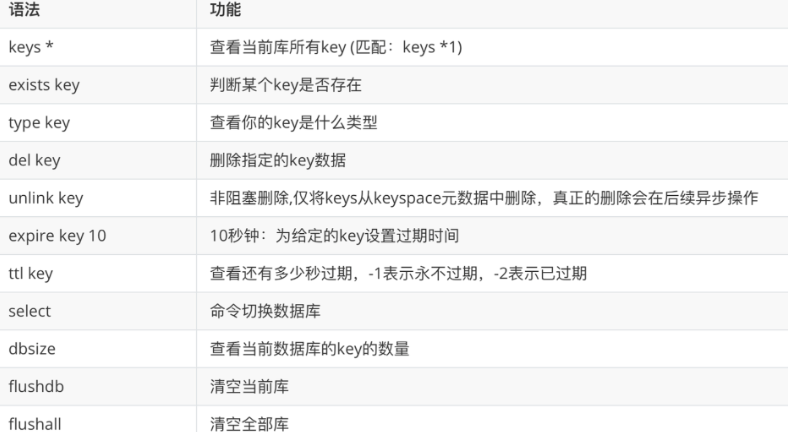
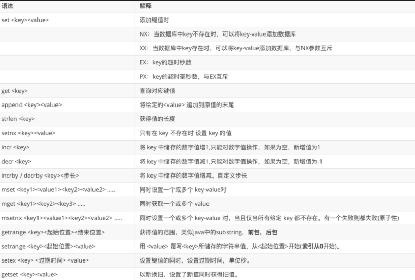
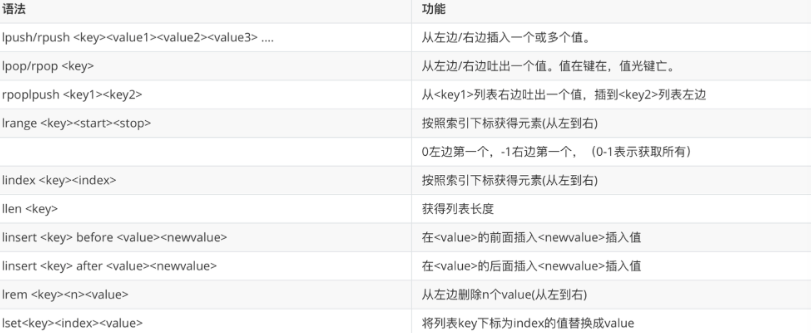
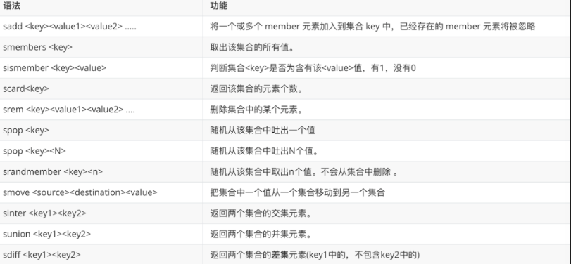
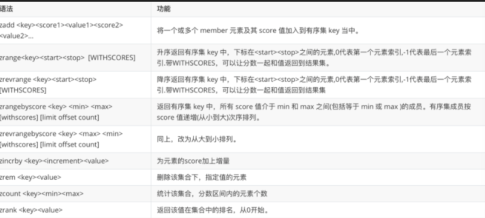
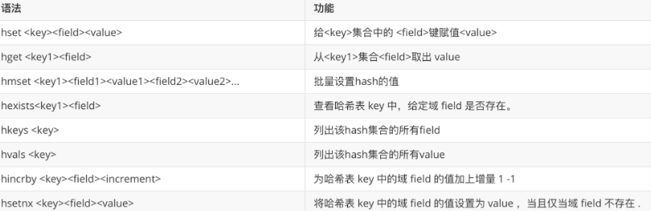

Redis 基础与实战
参考文档： - Redis 官方文档 - Redis Commands Reference
一、NoSQL 概述
NoSQL（Not Only SQL）是一类非关系型数据库的统称，旨在解决传统关系型数据库在高并发、大数据量、灵活数据模型等场景下的瓶颈。
| 类型 | 代表产品 | 适用场景 |
|---|---|---|
| 键值存储 | Redis、Memcached | 缓存、会话存储 |
| 文档数据库 | MongoDB、CouchDB | 内容管理、日志分析 |
| 列族数据库 | Cassandra、HBase | 大规模分布式存储 |
| 图数据库 | Neo4j、JanusGraph | 社交网络、推荐系统 |
Redis 是一个开源的内存型键值数据库，属于 NoSQL 中的键值存储类型。
Redis 核心优势
- 数据存储在内存中，读写性能极高（10万+ QPS）
- 支持 5 种数据结构，远超简单的 key-value
- 支持持久化（RDB + AOF），数据不丢失
- 原生支持主从复制、哨兵、Cluster 集群
二、安装部署
2.1 Docker 部署（推荐）
# 拉取镜像
docker pull redis:7.2
# 启动容器（带配置文件挂载 + 密码）
docker run -d \
--name redis \
-p 6379:6379 \
-v redis_data:/data \
-v redis_conf:/usr/local/etc/redis \
redis:7.2 \
redis-server /usr/local/etc/redis/redis.conf \
--appendonly yes \
--requirepass your_password
# 进入 Redis CLI
docker exec -it redis redis-cli -a your_password
2.2 本地源码安装
三、配置与启动
3.1 关键配置项
| 配置项 | 默认值 | 说明 |
|---|---|---|
daemonize |
no |
改为 yes 后台运行 |
bind |
127.0.0.1 |
注释掉或改 0.0.0.0 允许远程访问 |
protected-mode |
yes |
改为 no 关闭密码保护模式（生产环境建议保留 yes + 设密码） |
port |
6379 |
监听端口 |
requirepass |
无 | 设置密码：requirepass your_password |
loglevel |
notice |
日志级别：debug、verbose、notice、warning |
databases |
16 |
数据库数量 |
生产环境安全
- 不要仅靠
protected-mode no暴露 Redis，应设置requirepass - 建议配置
bind限制来源 IP - 不要用默认 6379 端口，可改为非常用端口
3.2 启动方式
# 前台启动（调试用）
redis-server
# 后台启动
redis-server redis.conf # 需配置 daemonize yes
# 检查是否运行
ps -ef | grep redis
redis-cli ping # 返回 PONG 表示正常
四、五大数据类型与操作命令
Redis 的五大数据类型指的是 Value 的类型。
4.1 Key 通用命令
| 命令 | 说明 |
|---|---|
KEYS pattern |
模糊匹配键（生产环境慎用，会阻塞） |
EXISTS key |
判断键是否存在 |
DEL key |
删除键 |
EXPIRE key seconds |
设置过期时间 |
TTL key |
查看剩余过期时间（-1=永不过期，-2=已过期） |
TYPE key |
查看键的类型 |
RENAME key newkey |
重命名 |
DBSIZE |
查看当前数据库键的数量 |
SELECT n |
切换到第 n 号数据库 |
FLUSHDB |
清空当前数据库 |
FLUSHALL |
清空所有数据库 |

4.2 String（字符串）
最基本的类型，一个 key 对应一个 value。可以包含任何数据（字符串、数字、序列化对象），最大 512MB。
| 命令 | 说明 |
|---|---|
SET key value |
设置值 |
GET key |
获取值 |
MSET k1 v1 k2 v2 |
批量设置 |
MGET k1 k2 |
批量获取 |
INCR key |
自增 1 |
DECR key |
自减 1 |
INCRBY key increment |
自增指定值 |
SETEX key seconds value |
设置值 + 过期时间 |
SETNX key value |
仅当 key 不存在时设置（分布式锁基础） |
APPEND key value |
追加字符串 |
STRLEN key |
获取字符串长度 |

4.3 List（列表）
双向链表结构，底层实现为 Quicklist（压缩链表 + 双向链表）。支持从两端操作，适合消息队列。
| 命令 | 说明 |
|---|---|
LPUSH key v1 v2 |
从左侧插入 |
RPUSH key v1 v2 |
从右侧插入 |
LPOP key |
从左侧弹出 |
RPOP key |
从右侧弹出 |
LRANGE key start stop |
查看范围元素 |
LLEN key |
列表长度 |
LINDEX key index |
按索引取值 |
LSET key index value |
按索引设置值 |
LINSERT key BEFORE\|AFTER pivot value |
插入到指定元素前后 |
BLPOP key timeout |
阻塞式弹出（超时时间秒） |

Quicklist 说明
Quicklist 是 Redis 用来实现 List 的底层数据结构 —— 它是「用双向链表串起来的多个小压缩列表」。
4.4 Set（集合）
无序且不重复的元素集合。支持交集、并集、差集运算，最多存储 2³² - 1 个元素。
| 命令 | 说明 |
|---|---|
SADD key v1 v2 |
添加元素 |
SMEMBERS key |
查看所有元素 |
SISMEMBER key value |
判断元素是否存在 |
SCARD key |
集合大小 |
SPOP key |
随机弹出元素 |
SRANDMEMBER key count |
随机获取（不删除） |
SINTER key1 key2 |
交集 |
SUNION key1 key2 |
并集 |
SDIFF key1 key2 |
差集 |
SMOVE source dest value |
移动元素 |
底层实现为哈希表（dict）：
typedef struct dictht {
dictEntry **table; // 哈希表数组
unsigned long size; // 哈希表大小
unsigned long sizemask; // 掩码大小，总是等于 size - 1
unsigned long used; // 已有节点数
} dictht;

4.5 ZSet（有序集合）
每个元素关联一个 score（分数），按 score 排序。底层是跳表（skiplist）+ 哈希表。
| 命令 | 说明 |
|---|---|
ZADD key score member |
添加元素及分数 |
ZRANGE key start stop [WITHSCORES] |
按分数升序获取 |
ZREVRANGE key start stop |
按分数降序获取 |
ZRANGEBYSCORE key min max |
按分数范围获取 |
ZSCORE key member |
获取元素的分数 |
ZCARD key |
集合大小 |
ZINCRBY key increment member |
增加分数 |
ZREM key member |
删除元素 |
ZRANK key member |
获取排名（从 0 开始） |

4.6 Hash（哈希）
适合存储对象，key 对应一个 field-value 的集合。
| 命令 | 说明 |
|---|---|
HSET key field value |
设置字段值 |
HGET key field |
获取字段值 |
HMSET key f1 v1 f2 v2 |
批量设置字段 |
HMGET key f1 f2 |
批量获取字段值 |
HGETALL key |
获取所有字段和值 |
HLEN key |
字段数量 |
HKEYS key |
获取所有字段名 |
HVALS key |
获取所有字段值 |
HEXISTS key field |
判断字段是否存在 |
HDEL key field |
删除字段 |
HINCRBY key field increment |
字段值自增 |
HSETNX key field value |
仅当字段不存在时设置 |

五、Jedis
Jedis 是 Redis 官方推荐的 Java 客户端。
连接池使用
生产环境不要每次创建新连接，应使用 JedisPool 连接池复用连接。
六、Spring Data Redis
Spring Boot 官方提供的 Redis 抽象层，底层默认使用 Lettuce 客户端。
6.1 依赖与配置
<parent>
<groupId>org.springframework.boot</groupId>
<artifactId>spring-boot-starter-parent</artifactId>
<version>3.0.5</version>
</parent>
<dependencies>
<!-- Redis 场景启动器 -->
<dependency>
<groupId>org.springframework.boot</groupId>
<artifactId>spring-boot-starter-data-redis</artifactId>
</dependency>
<!-- 连接池（Lettuce 需要 commons-pool2） -->
<dependency>
<groupId>org.apache.commons</groupId>
<artifactId>commons-pool2</artifactId>
</dependency>
<!-- JSON 序列化 -->
<dependency>
<groupId>com.fasterxml.jackson.core</groupId>
<artifactId>jackson-databind</artifactId>
</dependency>
</dependencies>
6.2 自定义序列化器
默认的 JDK 序列化 会在 Redis 中产生乱码，推荐改为 JSON 序列化：
@Configuration
public class RedisTemplateConfig {
@Bean
public RedisTemplate<String, Object> redisTemplate(RedisConnectionFactory connectionFactory) {
RedisTemplate<String, Object> template = new RedisTemplate<>();
template.setConnectionFactory(connectionFactory);
// JSON 序列化工具
GenericJackson2JsonRedisSerializer jsonSerializer =
new GenericJackson2JsonRedisSerializer();
// Key 使用 String 序列化
template.setKeySerializer(RedisSerializer.string());
template.setHashKeySerializer(RedisSerializer.string());
// Value 使用 JSON 序列化
template.setValueSerializer(jsonSerializer);
template.setHashValueSerializer(jsonSerializer);
template.afterPropertiesSet();
return template;
}
}
七、事务与锁
7.1 Redis 事务
Redis 事务是一系列命令的排队执行（MULTI → EXEC），但不具备 ACID 特性：
| 特性 | MySQL | Redis |
|---|---|---|
| 原子性 | ✅ 全部成功或全部回滚 | ❌ 不支持回滚 |
| 一致性 | ✅ | ✅ |
| 隔离性 | ✅ | ❌ 无隔离级别 |
| 持久性 | ✅ | 取决于持久化策略 |
事务不回滚
Redis 事务执行期间，如果某条命令出错，其他命令仍会继续执行，不会回滚。
7.2 乐观锁（WATCH）
在事务执行前监控 key，如果被监控的 key 被其他客户端修改，则事务执行失败。
7.3 悲观锁 vs 乐观锁
| 对比项 | 悲观锁 | 乐观锁（WATCH） |
|---|---|---|
| 假设 | 认为并发冲突一定会发生 | 认为并发冲突很少发生 |
| 实现 | 直接加锁（如 SETNX 分布式锁） |
监控 key，冲突时重试 |
| 性能 | 较差（串行化） | 较好（无锁） |
| 适用场景 | 写冲突频繁 | 读多写少 |
八、Lua 脚本
Lua 是轻量级脚本语言，在 Redis 中可以原子执行多条命令，减少网络往返。
8.1 特点
- 原子性：整个脚本作为一个原子操作执行，不会被其他命令打断
- 减少网络开销：一次请求执行多条命令
- 复用性：脚本会被 Redis 缓存，后续通过 SHA1 调用
8.2 Spring Boot 中使用 Lua
@Bean
public RedisScript<Boolean> booleanRedisScript() {
// 加载脚本文件（放在 resources/lua/ 下）
Resource resource = new ClassPathResource("lua/change.lua");
// 参数 1：脚本资源对象 参数 2：返回值类型
return RedisScript.of(resource, Boolean.class);
}
// 执行脚本
List<String> keys = Collections.singletonList("myKey");
Boolean result = redisTemplate.execute(
redisScript, // RedisScript 对象
keys, // KEYS 参数
"arg1", "arg2" // ARGV 参数
);
九、持久化策略
9.1 RDB（快照持久化）
在指定时间间隔内，将内存中的数据集快照写入磁盘，生成 dump.rdb 文件。
RDB 特性
save 900 1的周期一定执行完毕才会触发，不会中途触发shutdown时会自动触发bgsave- 优点：文件紧凑、恢复速度快、适合备份
- 缺点：可能丢失最后一次快照之后的数据
9.2 AOF（追加文件持久化）
记录服务器接收到的每一个写命令，以协议格式追加到 appendonly.aof 文件末尾。
重写计算示例
9.3 RDB vs AOF 对比
| 特性 | RDB | AOF |
|---|---|---|
| 持久化方式 | 全量快照 | 追加写命令 |
| 文件大小 | 小 | 大 |
| 恢复速度 | 快 | 慢 |
| 数据安全性 | 可能丢失最后一次快照后的数据 | 最多丢失 1 秒数据（everysec） |
| 性能影响 | fork 子进程时短暂停顿 | 持续写文件，略有影响 |
| 重写机制 | 无 | 有（BGREWRITEAOF） |
选择建议
- 官网推荐：同时开启 RDB + AOF（重启时 AOF 优先）
- 纯缓存场景：都不开启
- 敏感数据：同时开启，AOF 策略用
everysec - 非敏感数据：仅开 RDB
十、主从复制与哨兵
10.1 主从复制
主从用于读写分离：主节点负责写入并同步数据，从节点负责读取和接收同步数据。
10.2 主从复制原理
| 阶段 | 说明 |
|---|---|
| 全量复制 | 从节点首次连接主节点时，主节点将全量数据发送给从节点 |
| 增量复制 | 后续主节点的写操作会实时同步到从节点 |
| 断线重连 | 从节点断线重连后，通过 replication backlog 进行部分重同步 |
主从延迟
主从同步是异步的，从节点读取的数据可能不是最新的，存在延迟。
10.3 哨兵机制（Sentinel）
哨兵监控主从节点，当主节点故障时自动选举一个从节点成为新主节点。
哨兵工作原理
- 监控：哨兵定期 ping 主从节点，检测是否存活
- 通知：故障时通知管理员或其他客户端
- 故障转移：从节点中选举新主节点
- 配置更新：通知其他从节点执行
REPLICAOF指向新主节点 - 旧主恢复：变成新主的从节点
十一、Redis Cluster 集群
Redis Cluster 是官方提供的分布式解决方案，实现数据分片和高可用。
11.1 核心原理
- 16384 个哈希槽：整个键空间划分为 16384 个 slot
- 槽位分配：每个主节点负责一部分 slot
- 路由算法：
CRC16(key) % 16384→ 定位到具体 slot → 找到对应节点 - 去中心化：无中心代理，客户端直连任意节点，自动重定向（
MOVED/ASK）
11.2 集群搭建
11.3 插槽相关命令
# 计算 key 所属 slot
CLUSTER KEYSLOT key
# 查看某个 slot 的 key 数量
CLUSTER COUNTKEYSINSLOT <slot>
# 获取 slot 中的前 N 个 key
CLUSTER GETKEYSINSLOT <slot> <count>
11.4 Hash Tag（强制同槽）
使用 {} 包裹的部分作为哈希计算依据，确保多个 key 分配到同一个 slot：
# 以下三个 key 都会分配到同一个 slot
SET user:{1000}:name "张三"
SET user:{1000}:age 25
SET user:{1000}:email "zhang@example.com"
11.5 故障恢复
| 场景 | 行为 |
|---|---|
| 单个主节点挂 | 集群内置哨兵自动选举从节点升为主节点 |
| 整个分区挂（主从都挂） | cluster-require-full-coverage = yes → 整个集群不可用 |
cluster-require-full-coverage = no → 仅该 slot 数据不可用，其他正常 |
脑裂风险
网络分区可能导致多个主节点同时存在，造成数据不一致。通过配置合理的 cluster-node-timeout 和多数派投票来降低风险。